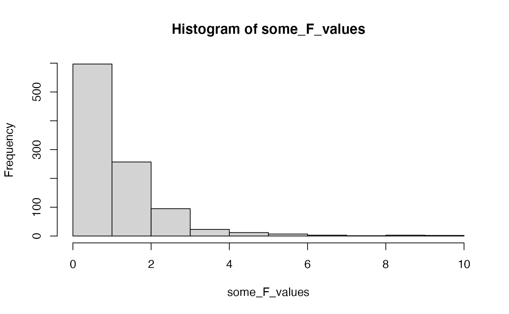
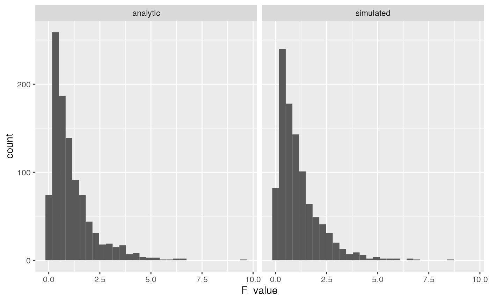
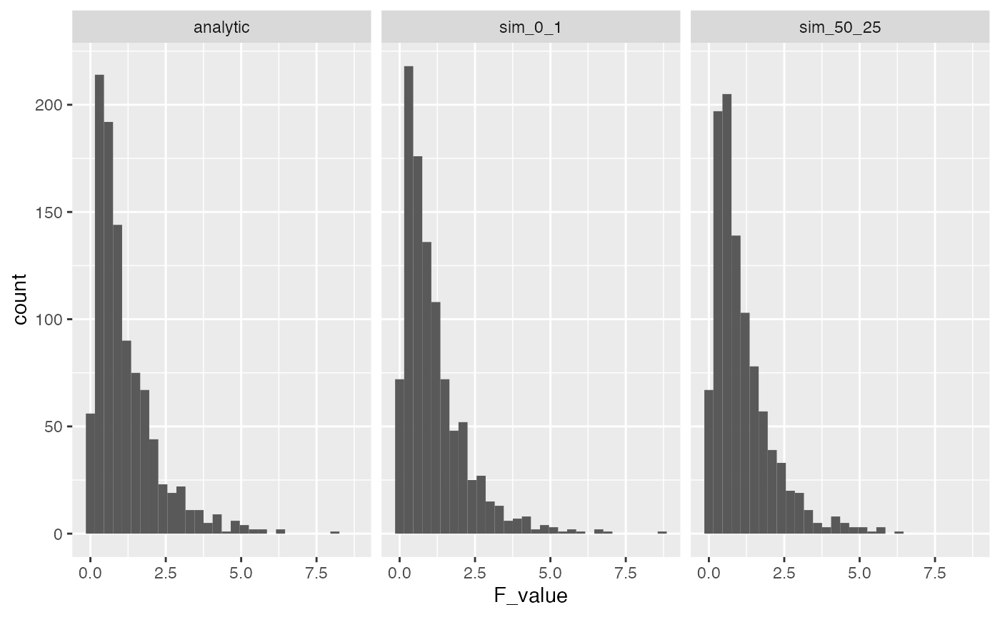
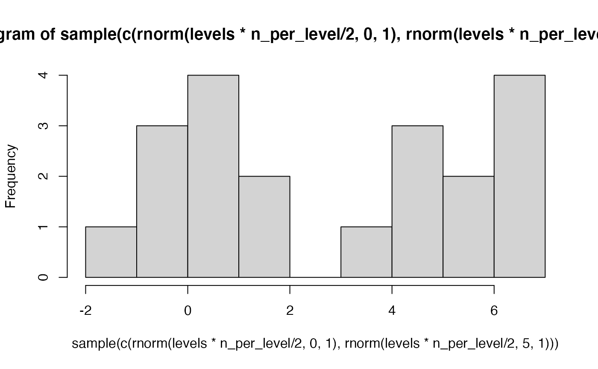
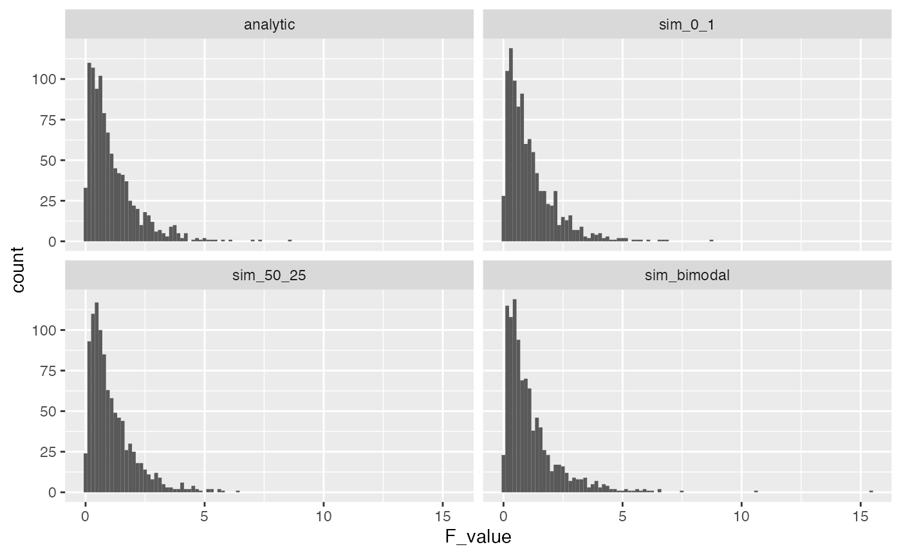
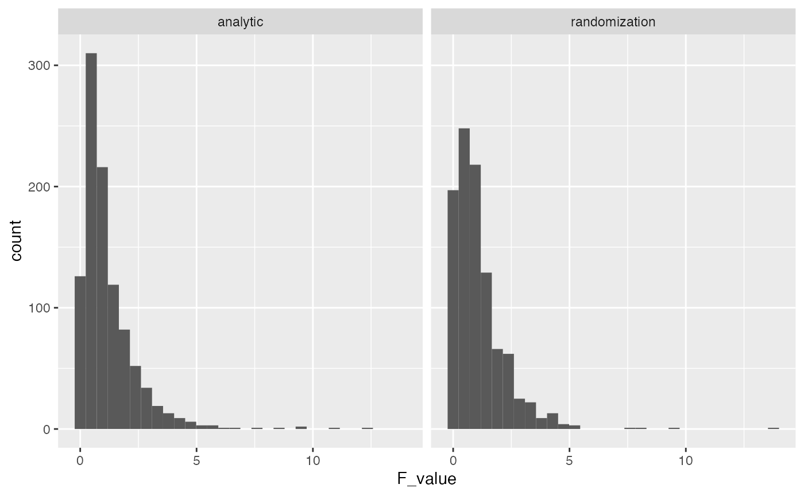
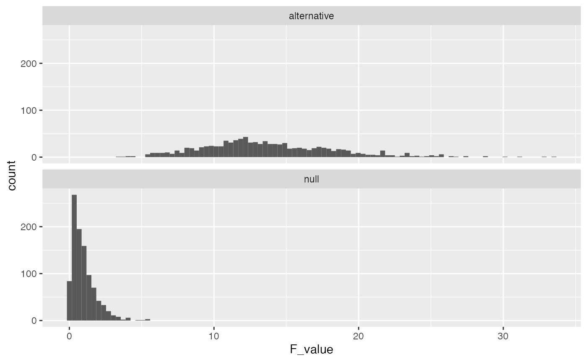
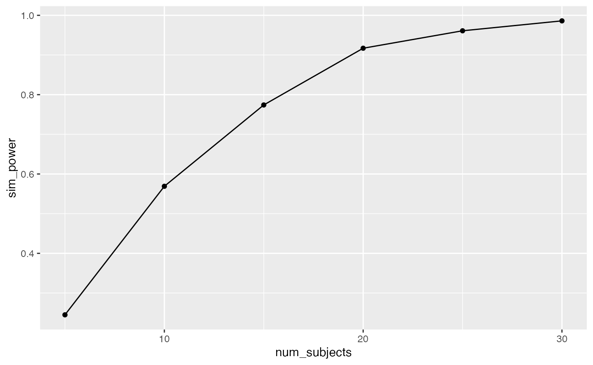
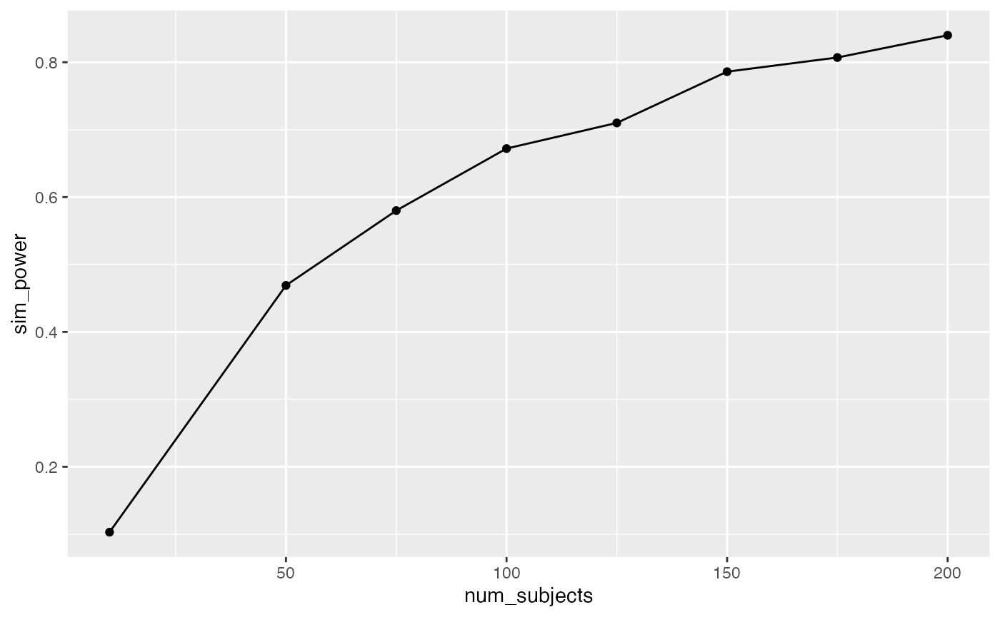

Lab5_ANOVA_Randomization.RmdChapters 9 and 10 from (Abdi et al., 2009).
Simulating the Null and Randomization test
Alternative Hypotheses
Throughout this course we reiterate that ANOVA and regression are fundamentally the same analysis. For example, the readings from the textbook for this week show ANOVA from a linear regression perspective. The purpose of this lab is to develop another similarity, between ANOVA and randomization/permutation tests (remember we discussed these last semester in lab 6). The plan for the lab is to walk through the conceptual issues involved in detecting causal influences from experiments with one independent variable and multiple levels. We will see how ANOVA is one approach to detecting causal influences. In this lab we will attempt to expose the assumptions made in ANOVA, and also show how Randomization tests could be employed as a non-parametric alternative (a test that doesn’t depend on the assumptions inherent to ANOVA).
You are planning to run a between-subjects experiment with one independent variable that has multiple levels (let’s say four). As an experimenter, you are interested in whether the manipulation (your IV) causes a change in your measurement (your DV). You will assign subjects randomly to each of the levels of your IV, and you will take measurements of subject performance in each of the levels. Then, you will look at means in each level.
If some aspect of your manipulation causally changes the means in your measurement (DV), then you will expect to find some differences in means between the levels. However, because you are randomly assigning different subjects to the different levels, you also know that you will find differences between the means as a result of the error introduced by the random assignment process. Thus, you consider the role of chance in producing differences in your measurements as a part of your inferential process for determining whether experiment had a causal influence.
Last lab we walked through the details of the pieces of ANOVA, including how the F-ratio is computed directly from the data. Remember, the formula for F is:
\(F = \frac{MS_{between}}{MS_{within}}\)
\(MS_{between}\) is a variance representing the average differences between the levels in your independent variable. This number should grow larger as the differences between means across your levels grows larger. \(MS_{within}\) is a variance representing the average differences among subjects inside each level. If we assume that that your manipulation does not change these random differences between subjects, then this variance should roughly be the same regardless of whether your manipulation causes a change in the means.
The \(F\)-ratio itself is a summary statistic of the data. \(F\) will tend to get larger than 1 when the experimental manipulation actually causes a difference in means between the levels. This is because the numerator \(MS_{between}\), will tend to be much larger than the denominator \(MS_{within}\). At the same time, \(F\) can take on a range values just by random chance too. So, a first step in our process of statistical inference will be to determine what kinds of values F can take as a result of our random assignment process. This involves constructing a sampling distribution of \(F\) for the null-hypothesis of no differences between means.
As mentioned last class, base R provide distribution functions for \(F\), such as df(), pf(), qf(), rf().
For example, we can sample random deviates from an F-distribution:

And, we can compute the probability of obtaining F-values, given associated p-values.
pf(4, 3, 16, lower.tail = FALSE) #> [1] 0.02658133
These distribution functions follow from the formal analytic solutions for the F-distribution, which requires advanced calculus. The wikipedia page for the F-distribution shows some of the math involved https://en.wikipedia.org/wiki/F-distribution. Although this math is advanced and beyond the scope of this lab, the concept behind the math is not very advanced, and we can approximate these distributions in R using monte-carlo simulation.
Before we simulate a null F-distribution in R, consider the overarching point of doing so for your experimental design. Let’s say you want to do a really good job of controlling for the error introduced by randomly assigning participants to groups. So, before you run your actual experiment, you instead run thousands of control experiments. In the control experiments, you randomly assign subjects to different groups and you measure them on your dependent variable. However, you do not conduct any manipulation at all. In this case it is impossible for your manipulation to do anything because there wasn’t one. However, you have still assigned subjects randomly to different groups. As a result, you can measure F-ratios for each of the control experiments. Sometimes by random chance you will have larger and smaller F-ratios. All of the variation in the F-ratios for your control experiments is a result of random assignment process and the fact that your dependent measure has some inherent variability. As a careful experimenter, you are interested in knowing what this control distribution of F-values looks like before you run your experiment. In other words, the null-distribution is a record of what happens across the ultimate set of control experiments (where your manipulation does nothing). If you could estimate this distribution, then when you run your experiment you could ask yourself whether you think the result you found could have happened in the control scenario (e.g., could have been something that chance did, and not your manipulation).
library(tibble) # construct a dataframe to represent sampling random subjects into each group of the design levels <- 4 n_per_level <- 5 random_data <- tibble(subjects = 1:(levels*n_per_level), IV = as.factor(rep(1:levels, each = n_per_level)), DV = rnorm(levels*n_per_level, 0, 1) ) # compute the ANOVA and extractd the F-value aov.out <- aov(DV ~ IV, data = random_data) simulated_F <- summary(aov.out)[[1]]$`F value`[1] # repeat the above many times to compute the F-distribution save_F_values <- length(1000) for(i in 1:1000){ random_data <- tibble(subjects = 1:(levels*n_per_level), IV = as.factor(rep(1:levels, each = n_per_level)), DV = rnorm(levels*n_per_level, 0, 1) ) aov.out <- aov(DV ~ IV, data = random_data) simulated_F <- summary(aov.out)[[1]]$`F value`[1] save_F_values[i] <- simulated_F }
Let’s do a quick check to see that the results we are simulating above are like the results we would get from the analytic F-distributions. The simulated distribution should converge on the analytic one as the number of iterations in the monte-carlo simulation is increased.
library(ggplot2) F_comparison <- tibble(type = rep(c("analytic","simulated"), each = 1000), F_value = c(rf(1000,3,16),save_F_values)) ggplot(F_comparison, aes(x=F_value))+ geom_histogram()+ facet_wrap(~type)

A major purpose of running these simulations is to find ways to inspect the underlying assumptions of ANOVA. You can see that the simulation above produced the same F-distribution as the one obtained by the analytic solution for the F-distribution.
The basic assumption in the simulation, which also appear in ANOVA, is that the score for each subject (that is used to compute the F-ratio) is randomly sampled from a normal distribution. In our simulation, we randomly sampled numbers for each subject from a unit normal distribution with mean = 0, and standard deviation = 1.
A first point to make is that the parameters in our simulated normal distribution do not influence the F-distribution. Remember, that a normal distribution has the same overall shape no matter what the mean and standard deviation is. As a result, we will always get the same F-distribution if we assume that all of our samples are coming from the same normal distribution. To illustrate the point, let’s re-run our simulation, but take values from normal distribution with mean = 50, and standard deviation = 25.
save_new_F_values <- length(1000) for(i in 1:1000){ random_data <- tibble(subjects = 1:(levels*n_per_level), IV = as.factor(rep(1:levels, each = n_per_level)), DV = rnorm(levels*n_per_level, 50, 25) ) aov.out <- aov(DV ~ IV, data = random_data) simulated_F <- summary(aov.out)[[1]]$`F value`[1] save_new_F_values[i] <- simulated_F } F_comparison <- tibble(type = rep(c("analytic","sim_0_1","sim_50_25"), each = 1000), F_value = c(rf(1000,3,16),save_F_values, save_new_F_values)) ggplot(F_comparison, aes(x=F_value))+ geom_histogram()+ facet_wrap(~type)

A common term to describe the above assumption is i.i.d, which stands for independent and identically distributed. That is, we assume that each score in the data is sampled independently (or randomly) from all of the other scores, and each score is sampled from the identical distribution as all other scores. In the two simulated F-distributions above, we implemented the iid assumption both times. In one case, we sampled values from a normal with mean = 0 , and sd = 1, and the in the other we sampled scores from a normal with mean = 50, and sd = 25. As an aside, it is worth considering whether this assumption is ever true in the real world. For example, could you run a control experiment where you sample people into different groups, do no manipulation beyond assigning people to different groups, and then be confident that the mean of your measurement of each person is the same as sampling from a iid normal distribution?
Even though in practice we routinely violate assumptions of ANOVA, it is also the case that F-distributions are fairly resistant to violations of assumptions. For example, let’s assume that individual scores are sampled from a bimodal distribution, that is very obviously not normal. The result is that F-distribution is roughly similar to our previous ones based on the normal distribution.
# an example bi-modal sample hist(sample(c(rnorm(levels*n_per_level/2,0,1),rnorm(levels*n_per_level/2,5,1))))

save_bimodal_F_values <- length(1000) for(i in 1:1000){ random_data <- tibble(subjects = 1:(levels*n_per_level), IV = as.factor(rep(1:levels, each = n_per_level)), DV = sample(c(rnorm(levels*n_per_level/2,0,1), rnorm(levels*n_per_level/2,5,1))) ) aov.out <- aov(DV ~ IV, data = random_data) simulated_F <- summary(aov.out)[[1]]$`F value`[1] save_bimodal_F_values[i] <- simulated_F } F_comparison <- tibble(type = rep(c("analytic","sim_0_1","sim_50_25", "sim_bimodal"), each = 1000), F_value = c(rf(1000,3,16),save_F_values, save_new_F_values,save_bimodal_F_values)) ggplot(F_comparison, aes(x=F_value))+ geom_histogram(bins=100)+ facet_wrap(~type)

Let’s consider p-values for a moment. The graph above shows several simulations of the “ultimate control experiment” for our design. All of the \(F-values\) are the values that can be obtained by chance alone. Remember, we introduce randomness by assigning different people randomly to different groups, and we assume there is inherent variability in our measurement that is also unpredictable.
Let’s be conventional for a moment and ask about the critical value of F, for an alpha of .05. This would be the value of F where 95% of F values are smaller than the critical value.
We can use the qf function to compute the critical value precisely:
qf(.95,3,16) #> [1] 3.238872
Let’s see how close each of the simulations got to this critical value:
library(dplyr) ## 1000 deviates samples from true F distribution Fs <- F_comparison[F_comparison$type=="analytic",]$F_value sorted_Fs <- sort(Fs) sorted_Fs[950] #> [1] 3.194495 ## 1000 deviates samples from normal sim_0_1 Fs <- F_comparison[F_comparison$type=="sim_0_1",]$F_value sorted_Fs <- sort(Fs) sorted_Fs[950] #> [1] 3.166004 ## 1000 deviates samples from normal sim_50_25 Fs <- F_comparison[F_comparison$type=="sim_50_25",]$F_value sorted_Fs <- sort(Fs) sorted_Fs[950] #> [1] 2.913236 ## 1000 deviates samples from bimodal sim Fs <- F_comparison[F_comparison$type=="sim_bimodal",]$F_value sorted_Fs <- sort(Fs) sorted_Fs[950] #> [1] 3.657799
Blurring your eyes a bit, we see that control experiments where the manipulation does nothing produce F values that are smaller than 3.2 to 3.4ish 95% of the time. Looking at the distributions, themselves, you can see that they never produce values much larger than 10.
If you were to conduct a real experiment, then you might want to observe an F value that was larger than 3.2ish. If you found an F-value larger than 10, you could be pretty confident that the null-distribution did not cause the F-value. Instead, it would seem more plausible that your experimental manipulation actually caused some change in the means of your measured variable.
We have seen that the true F-distribution is well approximated by our simulation distributions, and that the F-distribution is robust to violations of the assumptions of ANOVA. For example, when we changed the base distribution to a bi-modal distribution, we found a pretty similar overall F-distribution to the ones obtained assuming a normal distribution.
More generally, we can construct useful null distributions for a one-factor design that do not depend on the distributional assumptions of ANOVA. For example, we could conduct a randomization test. The randomization test creates a null-distribution that controls for the random assignment process. For example, it is clear that when an experiment involves randomly assigning people to different groups, that the assignment that happened is just one out of many possible assignments to the groups. For example, if you assigned all the tall people to one group, all of the average height people to one group, and all of the shorter people to another group, would you really want to claim that some manipulation like listening to different kinds of music, caused people to have different heights? No, instead you would say the assignment process caused people of specific heights to be assigned to specific groups. The general question here is, given that the people you are measuring will be different, what kinds of differences between groups could you get just by assigning people randomly to different groups?
The randomization test determines the answer to the above question by taking the observed data, reshuffling it across the groups many times over, and each time computing a test statistic like \(F\). s
Imagine we had some data where one group had a larger mean than the others. I just made up some numbers here, so they definetly did not come from a normal distribution. Most of the numbers are around 9, but the numbers in group 1 happen to be all above 10.
levels <- 4 n_per_level <- 5 some_data <- tibble(subjects = 1:(levels*n_per_level), IV = as.factor(rep(1:levels, each = n_per_level)), DV = c(11,12,11,11,12, 10,8,10,9,10, 8,9,10,10,10, 10,8,10,9,10 ) )
Even though we are violating the assumptions of the ANOVA, we can still compute the ANOVA table from the data. Here, we get an \(F\) value of 7.407. The p-value for this F-value assumes that the data were randomly sampled from a normal distribution, which they were not.
aov.out <- aov(DV ~ IV, data = some_data) summary(aov.out) #> Df Sum Sq Mean Sq F value Pr(>F) #> IV 3 15.0 5.000 7.407 0.00249 ** #> Residuals 16 10.8 0.675 #> --- #> Signif. codes: 0 '***' 0.001 '**' 0.01 '*' 0.05 '.' 0.1 ' ' 1
Instead of using the provided p-value, we can conduct a randomization test. This involves shuffling the data, computing F, and repeating several times to create a sampling distribution of \(F\). This distribution will be specific to the numbers in the dataset. We are asking, what kind of \(F\) values could have been obtained if the numbers for each person were randomly assigned to different groups.
save_F_values <- length(1000) for(i in 1:1000){ some_data <- tibble(subjects = 1:(levels*n_per_level), IV = as.factor(rep(1:levels, each = n_per_level)), DV = sample(c(11,12,11,11,12, 10,8,10,9,10, 8,9,10,10,10, 10,8,10,9,10 )) ) aov.out <- aov(DV ~ IV, data =some_data) simulated_F <- summary(aov.out)[[1]]$`F value`[1] save_F_values[i] <- simulated_F } F_comparison <- tibble(type = rep(c("analytic","randomization"), each = 1000), F_value = c(rf(1000,3,16),save_F_values)) ggplot(F_comparison, aes(x=F_value))+ geom_histogram()+ facet_wrap(~type)

As you can see, the distribution of possible F values that we obtained by randomly reshuffling the data isn’t terribly different from the analytic F distribution based on the normal distribution.
Using the F distribution from the Randomization test, we can compute a p-value for the observed F-value and find a similar result.
length(save_F_values[save_F_values>7.407])/1000 #> [1] 0.001
The above section showed an example of simulating the null-hypothesis for a design with one independent variable and multiple levels. The basic set-up was pretty straightforward. You randomly sample numbers from the same distribution into your different groups. Thus, the null hypothesis is that every group mean should be on average be the same, because they should all be the same as the mean of the distribution that they came from.
What if we want to simulate a situation where your experimental manipulation is presumed to actually do something to the measurement? If your manipulation causes some change in the measurement, then by definition we must be violating the iid assumption. It will no longer be the case that the scores sampled into different groups are taken randomly from identical distributions. Instead, we think of the manipulation as effectively causing multiple distributions to exist. If one level causes a large increase to the mean, then we think of the scores in that group as coming from a distribution with a shifted mean, relative to scores in the other groups.
The null-hypothesis is easy to simulate because of the iid assumption. However, alternative hypotheses in general are more difficult because there are an infinity of them.
Let’s begin by simulating one specific alternative hypothesis. The method for doing this is just to declare what distributions your data are being sampled from for each group. Any scenario that is not the null, is a possible alternative.
Let’s imagine that we are measuring performance on a standardized test, with mean = 100, and sd = 25. There are four groups that manipulate the kind of music people listen to when they take the test. Let’s say that for some reason listening to 1970s sitcom music causally changes test performance, and it increases the mean for that group by 1 one whole standard deviation. Let’s declare this exact situation in R.
The tibble represents random values for four groups sampled from two different distributions. Group one gets rnorm(n,125,25), and the other three groups get rnorm(n,100,25).
levels <- 4 n_per_level <- 5 alternative_data <- tibble(subjects = 1:(levels*n_per_level), IV = as.factor(rep(1:levels, each = n_per_level)), DV = c(rnorm(n_per_level, 125, 25), rnorm(n_per_level, 100, 25), rnorm(n_per_level, 100, 25), rnorm(n_per_level, 100, 25) ) )
In general, we can specify any alternative hypothesis that we want. All we have to do is declare the properties of the distribution(s) generating the scores in each group.
We can even generate F-distributions based off of the alternative that we specified. For example, what kind of F-values would we expect to get for the above set of assumptions?
# repeat the above many times to compute the F-distribution save_altF_values <- length(1000) for(i in 1:1000){ alternative_data <- tibble(subjects = 1:(levels*n_per_level), IV = as.factor(rep(1:levels, each = n_per_level)), DV = c(rnorm(n_per_level, 125, 25), rnorm(n_per_level, 100, 25), rnorm(n_per_level, 100, 25), rnorm(n_per_level, 100, 25) ) ) aov.out <- aov(DV ~ IV, data = alternative_data) simulated_F <- summary(aov.out)[[1]]$`F value`[1] save_altF_values[i] <- simulated_F } F_comparison <- tibble(type = rep(c("null","alternative"), each = 1000), F_value = c(rf(1000,3,16),save_altF_values)) ggplot(F_comparison, aes(x=F_value))+ geom_histogram(bins=100)+ facet_wrap(~type, nrow=2)
The alternative F-distribution is more spread out, and tends to have higher values than the null. But, there is still a good deal of overlap. For example, the critical value for F based on the null is
qf(.95,3,16) #> [1] 3.238872
How many times was F higher than 3.23 in the alternative distribution?
length(save_altF_values[save_altF_values > 3.23]) #> [1] 262
This is a pretty low number, and it means that the true effect is not detected very often even when it is actually there. In other words, the design has low power to detect to detect the effect.
We programmed one group to have a mean that was shifted by a whole standard deviation. This is a large difference, but it was not reliably detected by the design because of the large amount of variability stemming from the small n. Consider what happens here when we increase the number of subjects, say from 5 to 50 in each group:
n_per_level <- 50 # repeat the above many times to compute the F-distribution save_altF_values <- length(1000) for(i in 1:1000){ alternative_data <- tibble(subjects = 1:(levels*n_per_level), IV = as.factor(rep(1:levels, each = n_per_level)), DV = c(rnorm(n_per_level, 125, 25), rnorm(n_per_level, 100, 25), rnorm(n_per_level, 100, 25), rnorm(n_per_level, 100, 25) ) ) aov.out <- aov(DV ~ IV, data = alternative_data) simulated_F <- summary(aov.out)[[1]]$`F value`[1] save_altF_values[i] <- simulated_F } F_comparison <- tibble(type = rep(c("null","alternative"), each = 1000), F_value = c(rf(1000,3,96),save_altF_values)) ggplot(F_comparison, aes(x=F_value))+ geom_histogram(bins=100)+ facet_wrap(~type, nrow=2)

In this scenario the \(F\) values in the alternative distribution are much higher than the null distribution, and reliably so. The critical value for F is slightly different now because increasing n changed the degrees of freedom. The new critical value is:
qf(.95,3,200-4) #> [1] 2.650677
Now, we can ask how many experiments out of 1000 surpassed the critical value?
length(save_altF_values[save_altF_values > 2.65]) #> [1] 998
In this case, the design is very sensitive, 100% of the experiments would have yielded an F-value larger than the critical value. From a cost-benefit perspective, increasing n to 50 for each group might be waste of resources. For example, what is the least amount of subjects you would need to have power of around 95%?
One solution is fidget with n until you find about 95%…
For example, I wiggled n_per_level until I was getting about 95% of experiments passing the critical value, and I landed on n = 25 per group. Note, that this simulation is a little noisy because we are only conducting 1000 simulations, we would get a more precise and stable estimate by increasing the number of simulations.
n_per_level <- 25 # repeat the above many times to compute the F-distribution save_altF_values <- length(1000) for(i in 1:1000){ alternative_data <- tibble(subjects = 1:(levels*n_per_level), IV = as.factor(rep(1:levels, each = n_per_level)), DV = c(rnorm(n_per_level, 125, 25), rnorm(n_per_level, 100, 25), rnorm(n_per_level, 100, 25), rnorm(n_per_level, 100, 25) ) ) aov.out <- aov(DV ~ IV, data = alternative_data) simulated_F <- summary(aov.out)[[1]]$`F value`[1] save_altF_values[i] <- simulated_F } length(save_altF_values[save_altF_values > qf(.95,3,(n_per_level*4)-4)])/1000 #> [1] 0.955
Instead of wiggling the n by hand, we could run a set of simulations for different n, and plot a curve power-curve:
num_subjects <- c(5,10,15,20,25,30) sim_power <- length(length(num_subjects)) for(n in 1:length(num_subjects)){ n_per_level <- num_subjects[n] # repeat the above many times to compute the F-distribution save_altF_values <- length(1000) for(i in 1:1000){ alternative_data <- tibble(subjects = 1:(levels*n_per_level), IV = as.factor(rep(1:levels, each = n_per_level)), DV = c(rnorm(n_per_level, 125, 25), rnorm(n_per_level, 100, 25), rnorm(n_per_level, 100, 25), rnorm(n_per_level, 100, 25) ) ) aov.out <- aov(DV ~ IV, data = alternative_data) simulated_F <- summary(aov.out)[[1]]$`F value`[1] save_altF_values[i] <- simulated_F } power <- length(save_altF_values[save_altF_values > qf(.95,3,(n_per_level*4)-4)])/1000 sim_power[n] <- power } power_curve <- tibble(num_subjects, sim_power) knitr::kable(power_curve)
| num_subjects | sim_power |
|---|---|
| 5 | 0.259 |
| 10 | 0.575 |
| 15 | 0.789 |
| 20 | 0.893 |
| 25 | 0.961 |
| 30 | 0.982 |
ggplot(power_curve, aes(x=num_subjects, y=sim_power))+ geom_point()+ geom_line()

Last semester we discussed power analysis for simple two-group designs along with the concept of effect-size. In those designs, we used Cohen’s D as a measure of effect-size, which expresses the mean difference between groups in terms of standard deviation units. There are several ways to generalize these ideas to one-factor ANOVA, where there are more than two groups.
Notice that in the above example, we didn’t discuss a general measure of effect-size before doing the power-analysis. Instead, we declared that one group would have a different mean than the other groups, and we also set the size of the difference to be one standard deviation. This approach is useful because it allows you, the researcher, to declare specifically what you think might happen in your experiment, and then conduct a simulation based power analysis to determine a sufficient sample-size to detect the effects that you specified. This is more or less in line with Lenth (2001), who advocates for a thoughtful and tailored (to the research question at hand) approach to the problem of power analysis and sample-size planning.
Let’s consider one more example of a simulated power-analysis for a more general kind of question. Assume you a researcher studying performance on a standardized test that is normally distributed. You are interested in manipulations that help people learn the material that is being tested, and subsequently improve their test scores. You are going to run an experiment with 4 groups, and each group will get different learning interventions. You don’t know anything about whether the learning interventions will do anything. You have no idea what “effect” they will have on the test scores. Can you do a power analysis here, even when you have no idea could happen?…for example, consider that any of the four different interventions could cause mean test performance to go up or down by any amount…and, since the groups are independent, you could potentially find any combination of the possible ways that four group means could be different!
In this case, let’s say you are interested in practical matters like whether or not to actually use a particular learning intervention to help students. In this stage of the research you are trying different learning interventions out to see if any of them work. You are trying four different ones at a time. A good practical question is, what kind of learning intervention is worth using? Is a learning intervention that changes test performance by .00000001 of a standard deviation worth discovering? Perhaps not for the purposes of training students. What size of a difference is worth it?
Let’s say you would be interested in sdetecting evidence of manipulations that caused test performance to go up or down by around .2 standard deviations on average. I’m pulling this number out of the air as if it is meaningful, but perhaps it’s a big enough shift to be interesting. How many subjects are needed for reasonably powered design, let’s say power = 80%?
We can implement this situation by changing the mean value for each group. In this case, I sample the mean parameter from another normal distribution with mean = 0 and sd = .2. This results in the data from each group being sampled from different normal distributions that on average have mean differences of about .2 standard deviations in any direction.
num_subjects <- c(10, 50, 75, 100, 125, 150, 175, 200) sim_power <- length(length(num_subjects)) for(n in 1:length(num_subjects)){ n_per_level <- num_subjects[n] # repeat the above many times to compute the F-distribution save_altF_values <- length(1000) for(i in 1:1000){ alternative_data <- tibble(subjects = 1:(levels*n_per_level), IV = as.factor(rep(1:levels, each = n_per_level)), DV = c(rnorm(n_per_level, rnorm(1,0,.2), 1), rnorm(n_per_level, rnorm(1,0,.2), 1), rnorm(n_per_level, rnorm(1,0,.2), 1), rnorm(n_per_level, rnorm(1,0,.2), 1) ) ) aov.out <- aov(DV ~ IV, data = alternative_data) simulated_F <- summary(aov.out)[[1]]$`F value`[1] save_altF_values[i] <- simulated_F } power <- length(save_altF_values[save_altF_values > qf(.95,3,(n_per_level*4)-4)])/1000 sim_power[n] <- power } power_curve <- tibble(num_subjects, sim_power) knitr::kable(power_curve)
| num_subjects | sim_power |
|---|---|
| 10 | 0.133 |
| 50 | 0.444 |
| 75 | 0.561 |
| 100 | 0.651 |
| 125 | 0.725 |
| 150 | 0.755 |
| 175 | 0.803 |
| 200 | 0.852 |
ggplot(power_curve, aes(x=num_subjects, y=sim_power))+ geom_point()+ geom_line()

Your assignment instructions are the following:
In the context of making decisions about whether or not observed data is consistent or inconsistent with a Null hypothesis, it is possible to make errors. The questions below ask you to create simulated data containing patterns that could lead to correct and incorrect decisions about the role of the null hypothesis.
Consider a design with 3 groups, and 10 people per group. Assume that the dependent variable is assumed to be normally distributed, and use unit normal distributions with mean = 0, and sd = 1 in your simulations.
Create simulated data for the above design that could be produced by the null hypothesis, and that results in a \(F\) value that is smaller than the critical value for \(F\) in this design (assume alpha = .05). Report the ANOVA, and show a ggplot of the means in the simulated data. Furthermore, display the individual data points on top of the means. Would you reject the null hypothesis in this situation, and would you be incorrect or correct in rejecting the null? (3 points)
Create simulated data for the above design that could be produced by the null hypothesis, and that results in a \(F\) value that is larger than the critical value for \(F\) in this design (assume alpha = .05). Report the ANOVA, and show a ggplot of the means in the simulated data. Furthermore, display the individual data points on top of the means. Would you reject the null hypothesis in this situation, and would you be incorrect or correct in rejecting the null? (3 points)
Bonus Question